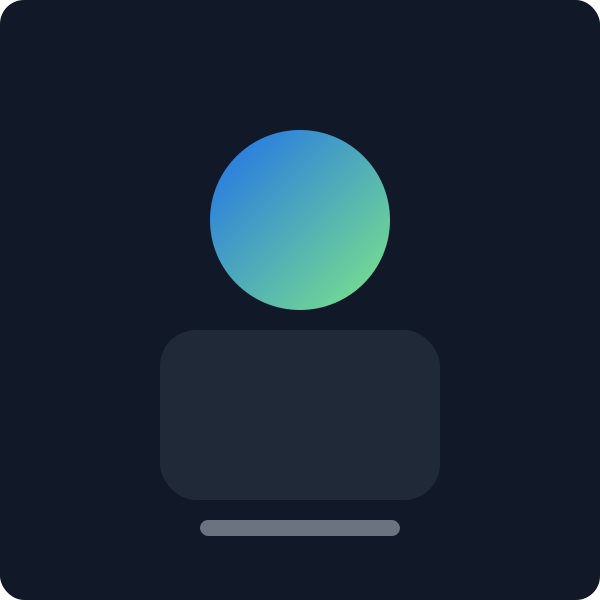

Hi, I’m Mathias.
I design and build digital products that balance business goals with user needs. My approach blends strategy, research, prototyping, and implementation to deliver end‑to‑end experiences.
Previously, I’ve worked across startups and agencies, partnering with cross‑functional teams to ship outcomes—not just outputs. I care deeply about accessibility, performance, and craft.
Skills
- Product Strategy
- UX Research
- Interaction Design
- Design Systems
- Prototyping
- HTML/CSS/JS
- Accessibility (WCAG)
- Performance
Design Philosophy
Great products are stories well told. I start with the user’s narrative—motivations, constraints, and context—then shape interfaces that make complex things feel simple. I prefer shipping small, sharp improvements rapidly over big‑bang releases.